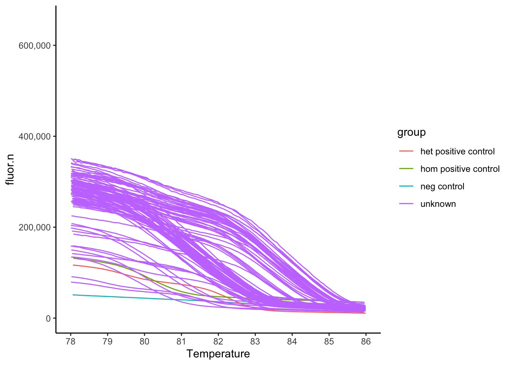
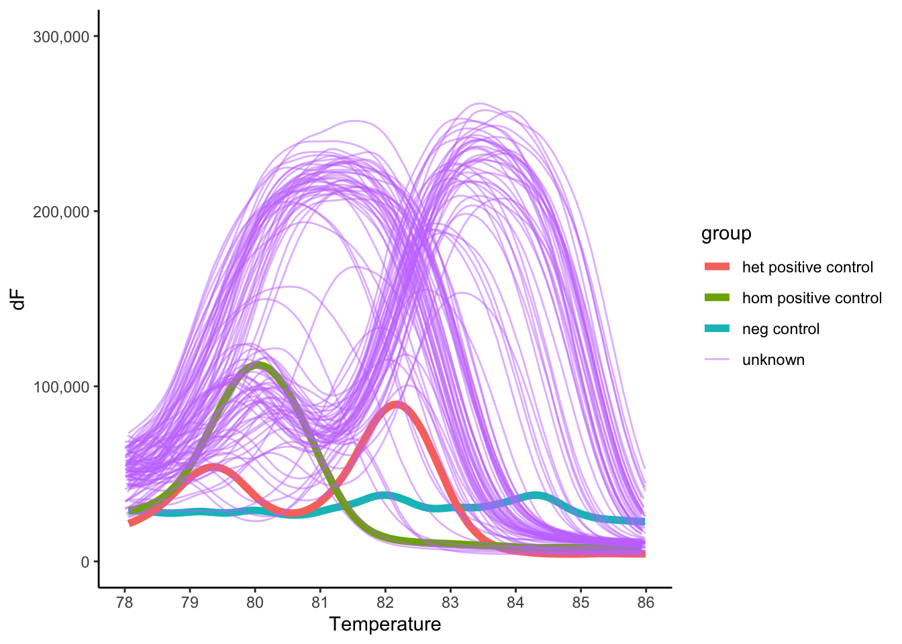
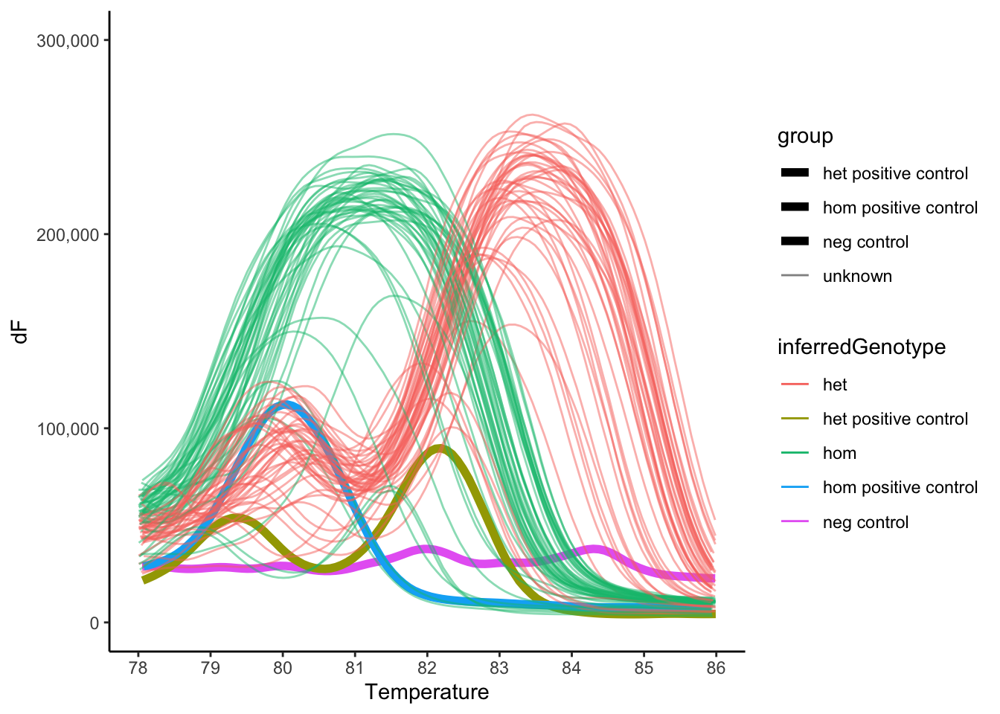

Last updated: 2023-08-23
Checks: 6 1
Knit directory: 2023_MPSIII_salbutamol/
This reproducible R Markdown analysis was created with workflowr (version 1.7.0). The Checks tab describes the reproducibility checks that were applied when the results were created. The Past versions tab lists the development history.
The R Markdown file has staged changes. To know which version of the R Markdown file created these results, you’ll want to first commit it to the Git repo. If you’re still working on the analysis, you can ignore this warning. When you’re finished, you can run wflow_publish to commit the R Markdown file and build the HTML.
Great job! The global environment was empty. Objects defined in the global environment can affect the analysis in your R Markdown file in unknown ways. For reproduciblity it’s best to always run the code in an empty environment.
The command set.seed(20230614) was run prior to running the code in the R Markdown file. Setting a seed ensures that any results that rely on randomness, e.g. subsampling or permutations, are reproducible.
Great job! Recording the operating system, R version, and package versions is critical for reproducibility.
Nice! There were no cached chunks for this analysis, so you can be confident that you successfully produced the results during this run.
Great job! Using relative paths to the files within your workflowr project makes it easier to run your code on other machines.
Great! You are using Git for version control. Tracking code development and connecting the code version to the results is critical for reproducibility.
The results in this page were generated with repository version 8381757. See the Past versions tab to see a history of the changes made to the R Markdown and HTML files.
Note that you need to be careful to ensure that all relevant files for the analysis have been committed to Git prior to generating the results (you can use wflow_publish or wflow_git_commit). workflowr only checks the R Markdown file, but you know if there are other scripts or data files that it depends on. Below is the status of the Git repository when the results were generated:
Ignored files:
Ignored: .DS_Store
Ignored: .Rhistory
Ignored: .Rproj.user/
Ignored: code/experiment 1.2/
Ignored: data/.DS_Store
Ignored: data/exp1.2/.DS_Store
Ignored: data/exp1.2/processed_data/
Ignored: data/exp1.2/raw_data/.DS_Store
Ignored: data/exp1.2/videos/
Ignored: data/exp1/.DS_Store
Ignored: data/exp1/processed_data/.DS_Store
Ignored: data/exp1/raw_data/.DS_Store
Ignored: data/exp1/videos/
Ignored: data/pilot/.DS_Store
Ignored: data/pilot/14 days/.DS_Store
Ignored: data/pilot/14 days/raw_data/.DS_Store
Ignored: data/pilot/7 days/.DS_Store
Ignored: data/pilot/7 days/raw_data/.DS_Store
Ignored: data/pilot/7 days/raw_data/distances/.DS_Store
Ignored: data/pilot/7 days/tracking_videos/
Untracked files:
Untracked: data/exp1.2/genotyping_data/meltcurveWithGenotypes.rds
Untracked: data/exp1.2/metadata_withGenotype.rds
Unstaged changes:
Modified: analysis/exp1.2_meltCurveGenotyping.rmd
Staged changes:
Modified: .gitignore
New: analysis/exp1.2_meltCurveGenotyping.rmd
New: analysis/fullexp1.rmd
Modified: analysis/pilot.rmd
New: analysis/piulot14days.rmd
New: code/experiment 1/distances_exp1.R
New: code/experiment 1/exp1_genotypingMeltCurve.R
New: code/experiment 1/tetras_preprocessing.R
Modified: code/pilot_distances_preprocessing.R
New: code/pilot_tetras_14d_preprocessing.R
Modified: code/pilot_tetras_preprocessing.R
New: data/exp1.2/2023_Aug18_salbutamolexp1_2_meta.xlsx
New: data/exp1.2/genotyping_data/KB_20230821_salbutamolExp1_2_nagluhomxhet7m_genotyping.eds
New: data/exp1.2/genotyping_data/KB_20230821_salbutamolExp1_2_nagluhomxhet7m_genotyping_amplificationdata.txt
New: data/exp1.2/genotyping_data/KB_20230821_salbutamolExp1_2_nagluhomxhet7m_genotyping_meltregionderivativedata.txt
New: data/exp1.2/genotyping_data/KB_20230821_salbutamolExp1_2_nagluhomxhet7m_genotyping_meltregionnormalizeddata.txt
New: data/exp1.2/genotyping_data/KB_20230821_salbutamolExp1_2_nagluhomxhet7m_genotyping_meltregiontemperaturedata.txt
New: data/exp1.2/genotyping_data/KB_20230821_salbutamolExp1_2_nagluhomxhet7m_genotyping_results.txt
New: data/exp1.2/genotyping_data/KB_20230821_salbutamolExp1_2_nagluhomxhet7m_genotyping_samplesetup.txt
New: data/exp1.2/raw_data/distances/ymaze_inLT-20230818T102151-data_totals.csv
New: data/exp1.2/raw_data/distances/ymaze_inLT-20230818T104226-data_totals.csv
New: data/exp1.2/raw_data/distances/ymaze_inLT-20230818T115513-data_totals.csv
New: data/exp1.2/raw_data/distances/ymaze_inLT-20230818T130757-data_totals.csv
New: data/exp1.2/raw_data/distances/ymaze_inLT-20230818T141842-data_totals.csv
New: data/exp1.2/raw_data/distances/ymaze_inLT-20230818T153027-data_totals.csv
New: data/exp1.2/raw_data/distances/ymaze_inLT-20230818T164048-data_totals.csv
New: data/exp1.2/raw_data/distances/ymazeinLT-20230818T095428-data_totals.csv
New: data/exp1.2/raw_data/distances/ymazeinLT-20230818T095643-data_totals.csv
New: data/exp1.2/raw_data/distances/ymazeinLT-20230818T104449-data_totals.csv
New: data/exp1.2/raw_data/distances/ymazeinLT-20230818T115820-data_totals.csv
New: data/exp1.2/raw_data/distances/ymazeinLT-20230818T131032-data_totals.csv
New: data/exp1.2/raw_data/distances/ymazeinLT-20230818T142117-data_totals.csv
New: data/exp1.2/raw_data/distances/ymazeinLT-20230818T153318-data_totals.csv
New: data/exp1.2/raw_data/distances/ymazeinLT-20230818T164213-data_totals.csv
New: data/exp1.2/raw_data/distances/ymazeinLT-20230818T164447-data_totals.csv
New: data/exp1.2/raw_data/distances/ymazeinLT-20230818T164456-data_totals.csv
New: data/exp1.2/raw_data/zones/ymaze8-20230818T095443.csv
New: data/exp1.2/raw_data/zones/ymaze_inLT-20230818T102150.csv
New: data/exp1.2/raw_data/zones/ymaze_inLT-20230818T104225.csv
New: data/exp1.2/raw_data/zones/ymaze_inLT-20230818T115512.csv
New: data/exp1.2/raw_data/zones/ymaze_inLT-20230818T130756.csv
New: data/exp1.2/raw_data/zones/ymaze_inLT-20230818T141841.csv
New: data/exp1.2/raw_data/zones/ymaze_inLT-20230818T153026.csv
New: data/exp1.2/raw_data/zones/ymaze_inLT-20230818T164047.csv
New: data/exp1.2/raw_data/zones/ymazeinLT-20230818T095427.csv
New: data/exp1.2/raw_data/zones/ymazeinLT-20230818T095643.csv
New: data/exp1.2/raw_data/zones/ymazeinLT-20230818T104448.csv
New: data/exp1.2/raw_data/zones/ymazeinLT-20230818T115819.csv
New: data/exp1.2/raw_data/zones/ymazeinLT-20230818T131031.csv
New: data/exp1.2/raw_data/zones/ymazeinLT-20230818T142116.csv
New: data/exp1.2/raw_data/zones/ymazeinLT-20230818T153317.csv
New: data/exp1.2/raw_data/zones/ymazeinLT-20230818T164213.csv
New: data/exp1.2/raw_data/zones/ymazeinLT-20230818T164446.csv
New: data/exp1.2/raw_data/zones/ymazeinLT-20230818T164456.csv
New: data/exp1/2023_June30_salbutamolexp1_meta.xlsx
New: data/exp1/2023_June30_salbutamolexp1_meta.xltx
New: data/exp1/genotyping_data/2023_0708_KB_melt_curve_genotyping_salbutamol_full_exp1_meltregionderivativedata.xls
New: data/exp1/genotyping_data/2023_0708_KB_melt_curve_genotyping_salbutamol_full_exp1_meltregiontemperaturedata.xls
New: data/exp1/genotyping_data/2023_0708_KB_melt_curve_genotyping_salbutamol_full_exp1_results.xls
New: data/exp1/genotyping_data/2023_0708_KB_melt_curve_genotyping_salbutamol_full_exp1_samplesetup.xls
New: data/exp1/genotyping_data/genotypninResults.csv
New: data/exp1/genotyping_data/meltcurveWithGenotypes.rds
New: data/exp1/metadata_withGenotype.rds
New: data/exp1/processed_data/distanceDataexp1.rds
New: data/exp1/processed_data/final_output.csv
New: data/exp1/processed_data/tidy_data.csv
New: data/exp1/processed_data/time_in_zone.csv
New: data/exp1/raw_data/distances/ymaze_inLT-20230707T103034-data_totals.csv
New: data/exp1/raw_data/distances/ymaze_inLT-20230707T114210-data_totals.csv
New: data/exp1/raw_data/distances/ymaze_inLT-20230707T125228-data_totals.csv
New: data/exp1/raw_data/distances/ymaze_inLT-20230707T140117-data_totals.csv
New: data/exp1/raw_data/distances/ymaze_inLT-20230707T151154-data_totals.csv
New: data/exp1/raw_data/distances/ymaze_inLT-20230707T162410-data_totals.csv
New: data/exp1/raw_data/distances/ymazeinLT-20230707T103252-data_totals.csv
New: data/exp1/raw_data/distances/ymazeinLT-20230707T114444-data_totals.csv
New: data/exp1/raw_data/distances/ymazeinLT-20230707T125502-data_totals.csv
New: data/exp1/raw_data/distances/ymazeinLT-20230707T140311-data_totals.csv
New: data/exp1/raw_data/distances/ymazeinLT-20230707T151509-data_totals.csv
New: data/exp1/raw_data/distances/ymazeinLT-20230707T162612-data_totals.csv
New: data/exp1/raw_data/zones/ymaze_inLT-20230707T103033.csv
New: data/exp1/raw_data/zones/ymaze_inLT-20230707T114209.csv
New: data/exp1/raw_data/zones/ymaze_inLT-20230707T125227.csv
New: data/exp1/raw_data/zones/ymaze_inLT-20230707T140116.csv
New: data/exp1/raw_data/zones/ymaze_inLT-20230707T151154.csv
New: data/exp1/raw_data/zones/ymaze_inLT-20230707T162410.csv
New: data/exp1/raw_data/zones/ymazeinLT-20230707T103252.csv
New: data/exp1/raw_data/zones/ymazeinLT-20230707T114443.csv
New: data/exp1/raw_data/zones/ymazeinLT-20230707T125501.csv
New: data/exp1/raw_data/zones/ymazeinLT-20230707T140310.csv
New: data/exp1/raw_data/zones/ymazeinLT-20230707T151508.csv
New: data/exp1/raw_data/zones/ymazeinLT-20230707T162611.csv
Modified: data/pilot/14 days/KB 14June2023 melt curve 2_data.xls
New: data/pilot/14 days/processed_data/distanceData14days.rds
New: data/pilot/14 days/processed_data/final_output.csv
New: data/pilot/14 days/processed_data/tidy_data.csv
New: data/pilot/14 days/processed_data/time_in_zone.csv
New: data/pilot/14 days/raw_data/distances/ymaze_inLT-20230613T103951-data_totals.csv
New: data/pilot/14 days/raw_data/distances/ymaze_inLT-20230613T115104-data_totals.csv
New: data/pilot/14 days/raw_data/distances/ymaze_inLT-20230613T130222-data_totals.csv
New: data/pilot/14 days/raw_data/distances/ymaze_inLT-20230613T141130-data_totals.csv
New: data/pilot/14 days/raw_data/distances/ymazeinLT-20230613T104135-data_totals.csv
New: data/pilot/14 days/raw_data/distances/ymazeinLT-20230613T115258-data_totals.csv
New: data/pilot/14 days/raw_data/distances/ymazeinLT-20230613T130503-data_totals.csv
New: data/pilot/14 days/raw_data/distances/ymazeinLT-20230613T141330-data_totals.csv
New: data/pilot/14 days/raw_data/zones/ymaze_inLT-20230613T103950.csv
New: data/pilot/14 days/raw_data/zones/ymaze_inLT-20230613T115104.csv
New: data/pilot/14 days/raw_data/zones/ymaze_inLT-20230613T130221.csv
New: data/pilot/14 days/raw_data/zones/ymaze_inLT-20230613T141129.csv
New: data/pilot/14 days/raw_data/zones/ymazeinLT-20230613T104134.csv
New: data/pilot/14 days/raw_data/zones/ymazeinLT-20230613T115258.csv
New: data/pilot/14 days/raw_data/zones/ymazeinLT-20230613T130502.csv
New: data/pilot/14 days/raw_data/zones/ymazeinLT-20230613T141329.csv
New: data/pilot/14 days/tracking_videos/YMaze_tracking-20230613T104021-f30.avi
New: data/pilot/14 days/tracking_videos/YMaze_tracking-20230613T104205-f30.avi
New: data/pilot/14 days/tracking_videos/YMaze_tracking-20230613T115135-f30.avi
New: data/pilot/14 days/tracking_videos/YMaze_tracking-20230613T115329-f30.avi
New: data/pilot/14 days/tracking_videos/YMaze_tracking-20230613T130252-f30.avi
New: data/pilot/14 days/tracking_videos/YMaze_tracking-20230613T130533-f30.avi
New: data/pilot/14 days/tracking_videos/YMaze_tracking-20230613T141400-f30.avi
Modified: data/pilot/7 days/06062023 salbutamol pilot fish metadata.xlsx
New: data/pilot/7 days/processed_data/distanceData7days.rds
New: output/R_objects/pilot/glmAlts7daysSalbutamol.rds
New: output/R_objects/pilot/glmtotalTurnss7daysSalbutamol.rds
New: output/R_objects/pilot/salbutamnol_pilot_7days_glmtimeBytotalturns.rds
Note that any generated files, e.g. HTML, png, CSS, etc., are not included in this status report because it is ok for generated content to have uncommitted changes.
There are no past versions. Publish this analysis with wflow_publish() to start tracking its development.
library(tidyverse)── Attaching core tidyverse packages ──────────────────────── tidyverse 2.0.0 ──
✔ dplyr 1.1.2 ✔ readr 2.1.4
✔ forcats 1.0.0 ✔ stringr 1.5.0
✔ ggplot2 3.4.2 ✔ tibble 3.2.1
✔ lubridate 1.9.2 ✔ tidyr 1.3.0
✔ purrr 1.0.1
── Conflicts ────────────────────────────────────────── tidyverse_conflicts() ──
✖ dplyr::filter() masks stats::filter()
✖ dplyr::lag() masks stats::lag()
ℹ Use the conflicted package (<http://conflicted.r-lib.org/>) to force all conflicts to become errorslibrary(readxl)
library(magrittr)
Attaching package: 'magrittr'
The following object is masked from 'package:purrr':
set_names
The following object is masked from 'package:tidyr':
extractlibrary(scales)
Attaching package: 'scales'
The following object is masked from 'package:purrr':
discard
The following object is masked from 'package:readr':
col_factortheme_set(theme_classic())In this page, i will analyse the melt curve data generated on the qPCR machine to genotype at the naglu A603 site. In this genotyping assay, I amplify a ~70 bp region over the mutation site in each fish on the qPCR machine. I then perform a melt curva after the PCR amplification is complete.
Since the naglu A603fs mutation deletes 10 bp, the 2 PCR products arising from the mutant and wild type alleles will have a different melting temperature, and this can be observed in the melt curve.
# read in the data
# melt cureve deriviities
dfs <-
read_delim("data/exp1.2/genotyping_data/KB_20230821_salbutamolExp1_2_nagluhomxhet7m_genotyping_meltregionderivativedata.txt",
delim = "\t", # tab delimited
skip = 8) %>%
pivot_longer(names_to = "Reading",
values_to = "dF",
starts_with("Reading")
) %>%
dplyr::select(Position = `Well Location`, Reading, dF)Rows: 96 Columns: 443
── Column specification ────────────────────────────────────────────────────────
Delimiter: "\t"
chr (3): Well Location, Target, Reporter Dye
dbl (440): Well, Reading 1, Reading 2, Reading 3, Reading 4, Reading 5, Read...
ℹ Use `spec()` to retrieve the full column specification for this data.
ℹ Specify the column types or set `show_col_types = FALSE` to quiet this message.# temperature readings
temps <-
read_delim("data/exp1.2/genotyping_data/KB_20230821_salbutamolExp1_2_nagluhomxhet7m_genotyping_meltregiontemperaturedata.txt",
delim = "\t",
skip = 8
) %>%
pivot_longer(names_to = "Reading",
values_to = "Temperature",
starts_with("Reading")
) %>%
dplyr::select(Position = `Well Location`, Reading, Temperature)Rows: 96 Columns: 443
── Column specification ────────────────────────────────────────────────────────
Delimiter: "\t"
chr (3): Well Location, Target, Reporter Dye
dbl (440): Well, Reading 1, Reading 2, Reading 3, Reading 4, Reading 5, Read...
ℹ Use `spec()` to retrieve the full column specification for this data.
ℹ Specify the column types or set `show_col_types = FALSE` to quiet this message.# normalised fluorescence from SYBR green data
fluordata <-
read_delim("data/exp1.2/genotyping_data/KB_20230821_salbutamolExp1_2_nagluhomxhet7m_genotyping_meltregionnormalizeddata.txt",
delim = "\t",
skip = 8
) %>%
pivot_longer(names_to = "Reading",
values_to = "fluor.n",
starts_with("Reading")
) %>%
dplyr::select(Position = `Well Location`, Reading, fluor.n)Rows: 96 Columns: 443
── Column specification ────────────────────────────────────────────────────────
Delimiter: "\t"
chr (3): Well Location, Target, Reporter Dye
dbl (440): Well, Reading 1, Reading 2, Reading 3, Reading 4, Reading 5, Read...
ℹ Use `spec()` to retrieve the full column specification for this data.
ℹ Specify the column types or set `show_col_types = FALSE` to quiet this message.# results file
data.results <-
read_delim("data/exp1.2/genotyping_data/KB_20230821_salbutamolExp1_2_nagluhomxhet7m_genotyping_results.txt",
delim = "\t",
skip = 8
) %>%
dplyr::select(Position = Well, sample = `Sample Name`, Tm1, Tm2, Tm3) %>%
mutate(group = case_when(
Position == "A1" ~ "neg control",
Position == "A2" ~ "het positive control",
Position == "A3" ~ "hom positive control",
TRUE ~ "unknown"
))Warning: One or more parsing issues, call `problems()` on your data frame for details,
e.g.:
dat <- vroom(...)
problems(dat)Rows: 100 Columns: 30
── Column specification ────────────────────────────────────────────────────────
Delimiter: "\t"
chr (9): Well, Sample Name, Target Name, Task, Reporter, Quencher, Cт, AMPN...
dbl (8): Cт Mean, Ct Threshold, Baseline Start, Baseline End, Efficiency, T...
lgl (13): RQ, RQ Min, RQ Max, Cт SD, ΔCт, ΔCт Mean, ΔCт SE, HK Control ΔCт M...
ℹ Use `spec()` to retrieve the full column specification for this data.
ℹ Specify the column types or set `show_col_types = FALSE` to quiet this message.# metadata of this fish and ckeanup
meta <- read_excel("data/exp1.2/2023_Aug18_salbutamolexp1_2_meta.xlsx") %>%
mutate(fish_id = as.character(fish_id),
treatment = factor(treatment,
levels = c("untreated", "20 µM Salbutamol")),
sex = as.factor(sex),
behavBatch = as.factor(behavBatch),
ymazeUnit = as.factor(ymazeUnit),
ymazePosition = as.factor(ymazePosition)) %>%
dplyr::select(fish_id, treatment, sex, Position = PositionForGeno, everything())
# join these together
data.meltcurve <-
dfs %>%
left_join(temps) %>%
left_join(fluordata) Joining with `by = join_by(Position, Reading)`
Joining with `by = join_by(Position, Reading)`As the temp increases, the fluorescence decreaes. This is consistent with theee PCR products melting and the SYBR Green no longer fluorescing.
data.meltcurve %>%
left_join(data.results) %>%
ggplot(aes(x = Temperature, y = fluor.n),
alpha = 0.75) +
geom_line(aes(group = Position,
colour = group)) +
scale_x_continuous(limits = c(78,86),
breaks = seq(70,90)) +
scale_y_continuous(labels = comma)Joining with `by = join_by(Position)`Warning: Removed 32264 rows containing missing values (`geom_line()`).
Two clear peaks are observed consistent with the wt and mutant alleles being present.
data.meltcurve %>%
left_join(data.results) %>%
ggplot(aes(x = Temperature, y = dF)) +
geom_line(aes(group = Position,
size = group,
alpha = group,
colour = group)) +
scale_size_manual(values = c(2, 2, 2, 0.5)) + # make the controls fatter to stand out more
scale_alpha_manual(values = c(1, 1, 1, 0.5)) + # make the unknowns more transparent so the controls stand out more.
scale_x_continuous(limits = c(78,86),
breaks = seq(70,90)) +
scale_y_continuous(labels = comma,
limits = c(0, 300000))Joining with `by = join_by(Position)`Warning: Using `size` aesthetic for lines was deprecated in ggplot2 3.4.0.
ℹ Please use `linewidth` instead.
This warning is displayed once every 8 hours.
Call `lifecycle::last_lifecycle_warnings()` to see where this warning was
generated.Warning: Removed 32264 rows containing missing values (`geom_line()`).
data.results <- data.results %>%
mutate(wtallele = case_when(
Tm1 > 81.9 ~ TRUE, #if the melt temp is higher than 83C, this is the wt band and so het
TRUE ~ FALSE
),
mutallele = case_when(
Tm1 < 81.9 ~ TRUE,
TRUE ~ FALSE
),
inferredGenotype = case_when(
Position == "A1" ~ "neg control",
Position == "A2" ~ "het positive control",
Position == "A3" ~ "hom positive control",
wtallele == TRUE & mutallele == FALSE ~ "het",
wtallele == TRUE & mutallele == TRUE ~ "het",
wtallele == FALSE & mutallele == TRUE ~ "hom"
)
)# repeat the plot
data.meltcurve %>%
left_join(data.results) %>%
ggplot(aes(x = Temperature, y = dF)) +
geom_line(aes(group = Position,
size = group,
alpha = group,
colour = inferredGenotype)) +
scale_size_manual(values = c(2, 2, 2, 0.5)) + # make the controls fatter to stand out more
scale_alpha_manual(values = c(1, 1, 1, 0.5)) + # make the unknowns more transparent so the controls
scale_x_continuous(limits = c(78,86),
breaks = seq(70,90)) +
scale_y_continuous(labels = comma,
limits = c(0, 300000))Joining with `by = join_by(Position)`Warning: Removed 32264 rows containing missing values (`geom_line()`).
# export data for the final document
meta %>%
left_join(data.results %>%
dplyr::select(Position, genotype = inferredGenotype)) %>%
dplyr::select(1,2,3, genotype, everything()) %>%
saveRDS("data/exp1.2/metadata_withGenotype.rds")Joining with `by = join_by(Position)`data.meltcurve %>%
left_join(data.results) %>%
saveRDS("data/exp1.2/genotyping_data/meltcurveWithGenotypes.rds")Joining with `by = join_by(Position)`
sessionInfo()R version 4.2.3 (2023-03-15)
Platform: x86_64-apple-darwin17.0 (64-bit)
Running under: macOS Catalina 10.15.7
Matrix products: default
BLAS: /Library/Frameworks/R.framework/Versions/4.2/Resources/lib/libRblas.0.dylib
LAPACK: /Library/Frameworks/R.framework/Versions/4.2/Resources/lib/libRlapack.dylib
locale:
[1] en_AU.UTF-8/en_AU.UTF-8/en_AU.UTF-8/C/en_AU.UTF-8/en_AU.UTF-8
attached base packages:
[1] stats graphics grDevices utils datasets methods base
other attached packages:
[1] scales_1.2.1 magrittr_2.0.3 readxl_1.4.2 lubridate_1.9.2
[5] forcats_1.0.0 stringr_1.5.0 dplyr_1.1.2 purrr_1.0.1
[9] readr_2.1.4 tidyr_1.3.0 tibble_3.2.1 ggplot2_3.4.2
[13] tidyverse_2.0.0
loaded via a namespace (and not attached):
[1] tidyselect_1.2.0 xfun_0.39 bslib_0.4.2 colorspace_2.1-0
[5] vctrs_0.6.2 generics_0.1.3 htmltools_0.5.5 yaml_2.3.7
[9] utf8_1.2.3 rlang_1.1.1 jquerylib_0.1.4 later_1.3.1
[13] pillar_1.9.0 glue_1.6.2 withr_2.5.0 bit64_4.0.5
[17] lifecycle_1.0.3 cellranger_1.1.0 munsell_0.5.0 gtable_0.3.3
[21] workflowr_1.7.0 evaluate_0.21 labeling_0.4.2 knitr_1.42
[25] tzdb_0.3.0 fastmap_1.1.1 httpuv_1.6.10 parallel_4.2.3
[29] fansi_1.0.4 highr_0.10 Rcpp_1.0.10 promises_1.2.0.1
[33] cachem_1.0.8 vroom_1.6.3 jsonlite_1.8.4 farver_2.1.1
[37] bit_4.0.5 fs_1.6.2 hms_1.1.3 digest_0.6.31
[41] stringi_1.7.12 grid_4.2.3 rprojroot_2.0.3 cli_3.6.1
[45] tools_4.2.3 sass_0.4.6 crayon_1.5.2 pkgconfig_2.0.3
[49] timechange_0.2.0 rmarkdown_2.21 rstudioapi_0.14 R6_2.5.1
[53] git2r_0.32.0 compiler_4.2.3